Golden-path audit updated — provider pin fixed; final proof still pending
The final live run stopped before reconstruction.
Wiggly reconstructed the real Zuckerberg reference into editable text and image layers, reopened that exact captured draft in the browser, moved and replaced the subject, resized text, read davidscookies.com, selected one pie, and generated three real directions. The remaining failures are output quality and reliability—not a missing canvas.
Honest result: my assistant could edit this Format, but I would not send the current David’s Cookies result to its head of marketing. The blank-image-picker bug is fixed and verified below. New analysis and remix prompts now name this kind of Format simply, treat creative CTA/banner copy as editable, use the selected product for the main subject when appropriate, and forbid fake leaks or unsupported “homemade” claims. Those rules still need one live end-to-end provider run before they count as a sendable result.
Passes · Free-first provider gate
The real IMG_1499.PNG passed local OCR and Gemma before any GPU started: 21 text regions in 7.6 seconds, then 5 fields and the three correct asset roles in 13.9 seconds. OpenRouter usage stayed at $0.02316184, proving the request cost $0. The route now permits failover only between hosts serving the same Gemma 4 31B model.
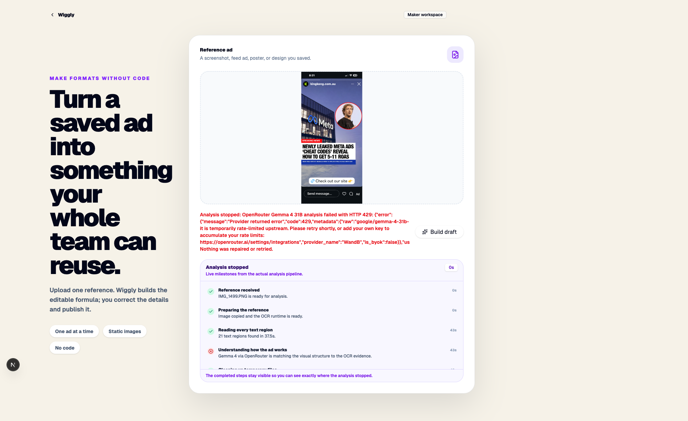
Final live proof
The real UI found 21 OCR regions, then OpenRouter’s WandB provider rate-limited Gemma 4 31B. Wiggly stopped visibly with no fallback, repair, or retry. RevealLayer was never called. Runtime routing is now restored to the already-benchmarked DeepInfra pin, but that correction still needs one live UI verification.
Original reference
The ad Wiggly must turn into an editable Format.
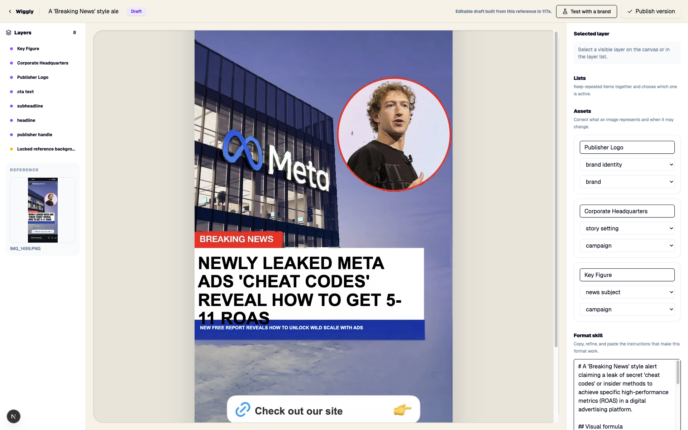
Current reconstruction
Wiggly correctly found the headline, proof line, building, logo, and Zuckerberg.
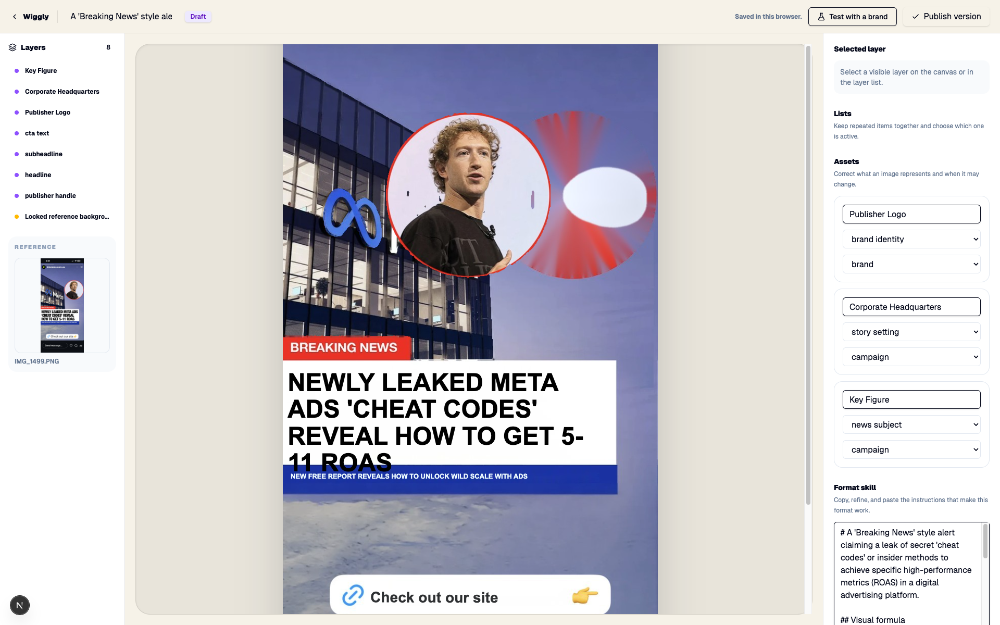
Move Zuckerberg
The old local inpaint leaves a giant red-and-white hole. This is not usable.
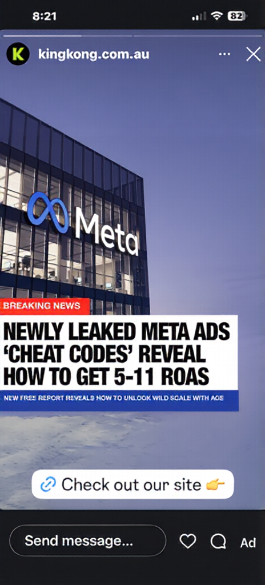
Clean background
The sky is restored while the building, Meta sign, story chrome, and all other content stay intact.
Movable subject
Zuckerberg becomes a transparent asset that can be moved or replaced.
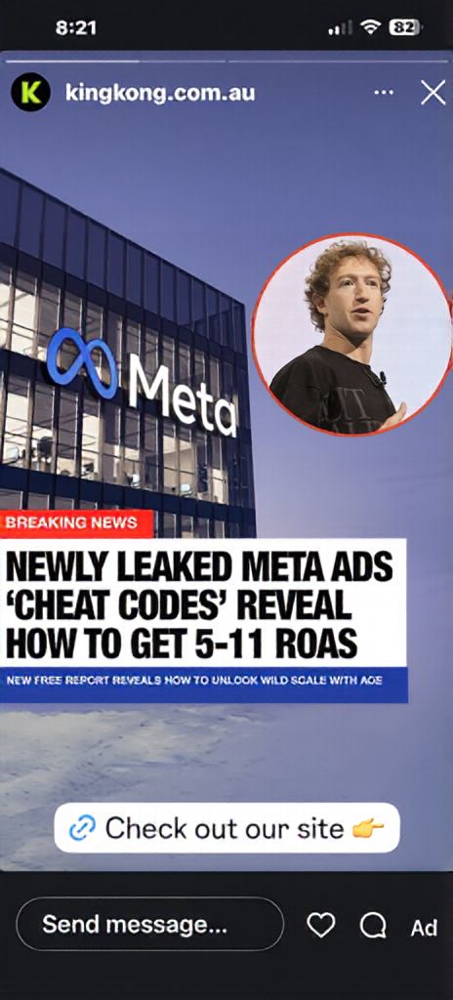
Reconstruction check
Putting the clean background and subject back together reproduces the original.
Real text-layer evidence
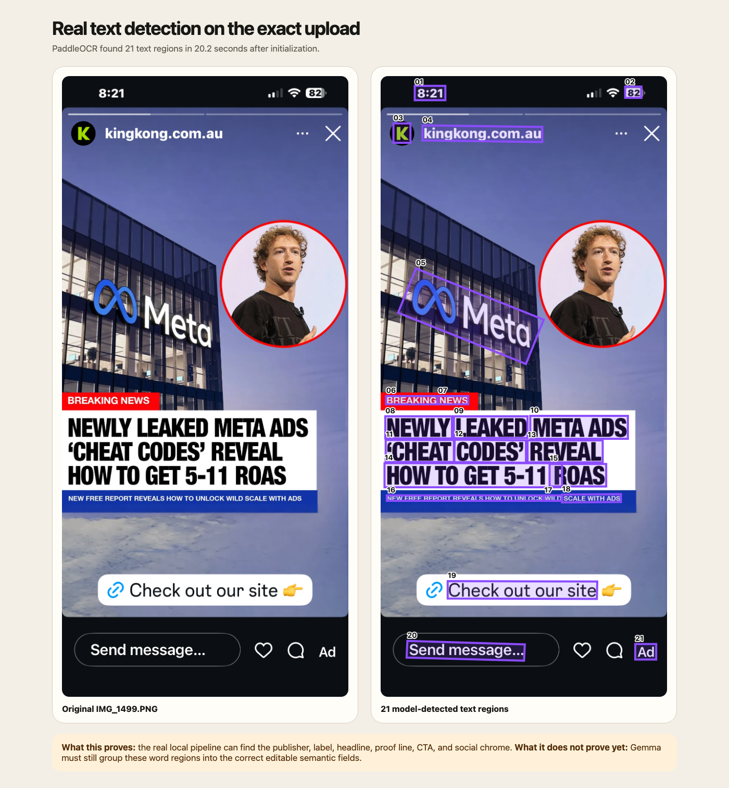
Find the editable writing
The real local OCR pipeline found 21 positioned text regions. The captured live analysis grouped them into publisher, headline, proof line, and CTA fields, plus separate publisher-logo, corporate-setting, and key-figure assets. New analyses now explicitly treat creative banners, proof lines, and CTA copy as editable campaign content instead of fixed app chrome.
What the assistant-facing Maker can already do
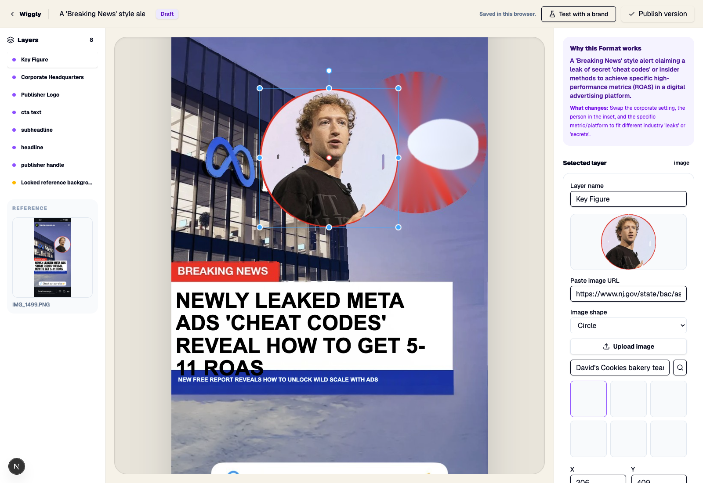
Replace an important image
The live subject layer can be selected, searched, uploaded, and kept square, rounded, or circular. The screenshot also exposes the next bug: a returned hotlink can appear blank or unrelated.
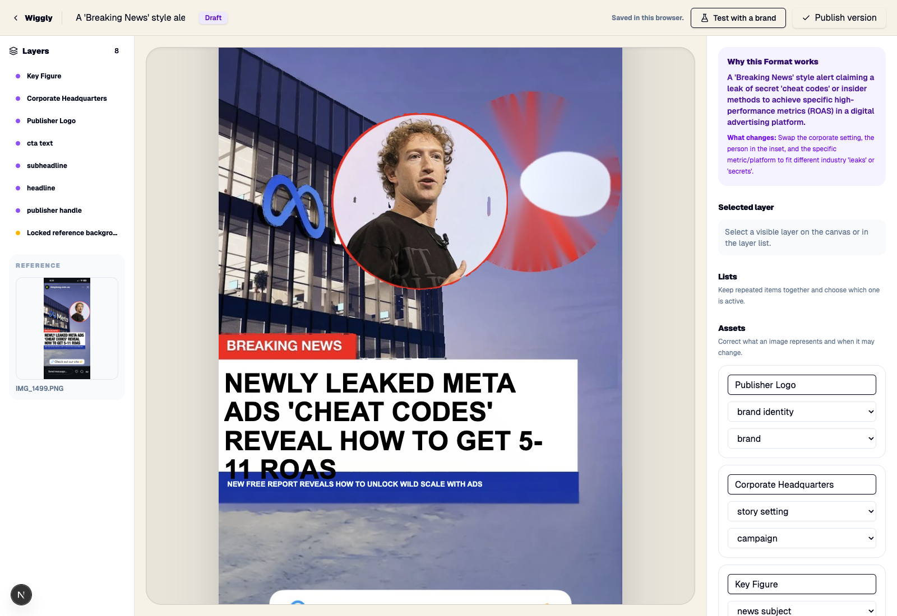
Move the subject
The exact live subject layer moved through the real canvas. The old local repaired region is still visibly poor; the separately captured RevealLayer background above is the clean replacement evidence.
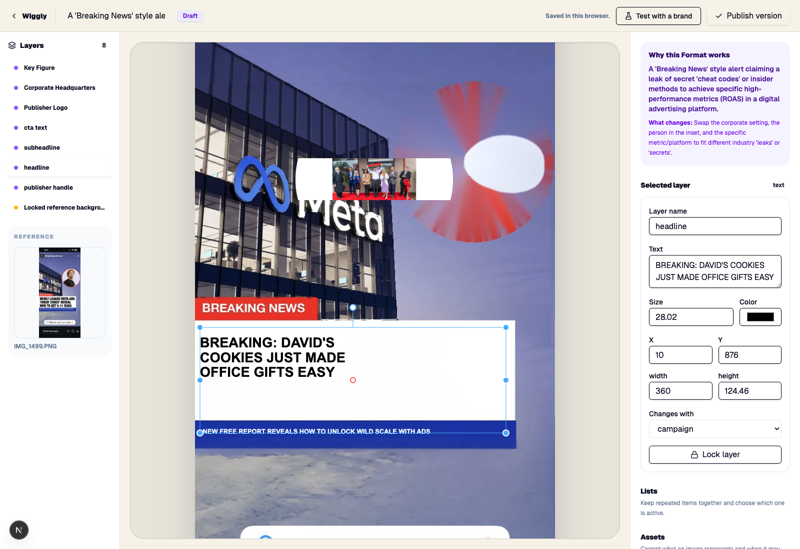
Resize text without clipping
Human-style number entry now commits on blur or Enter, and the headline fits the resized box.
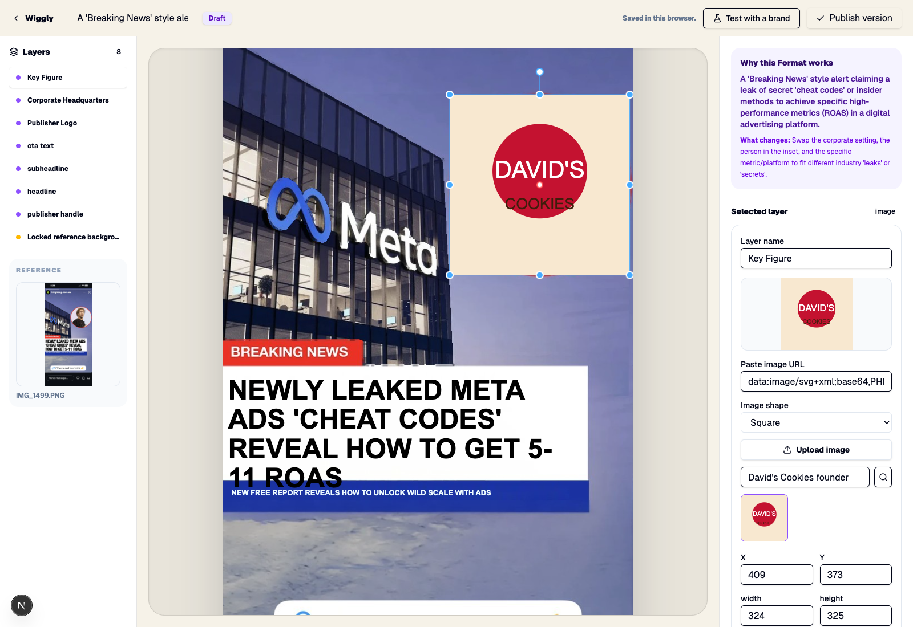
Only show images that loaded
A Playwright run through the real captured draft returned one dead hotlink and one valid image. The dead result disappeared, the valid image was the only selectable choice, and clicking it updated the canvas layer.
Real David’s Cookies remix attempt
Best direction: “The Gift Hack Alert” had the clearest buyer idea: send a homemade-looking wildberry pie without the oven mess. It still fails the send-it test because the generated setting retained a distorted Meta logo, the replacement inset lost its intended crop in that run, and the generic CTA stayed “Check out our site.”
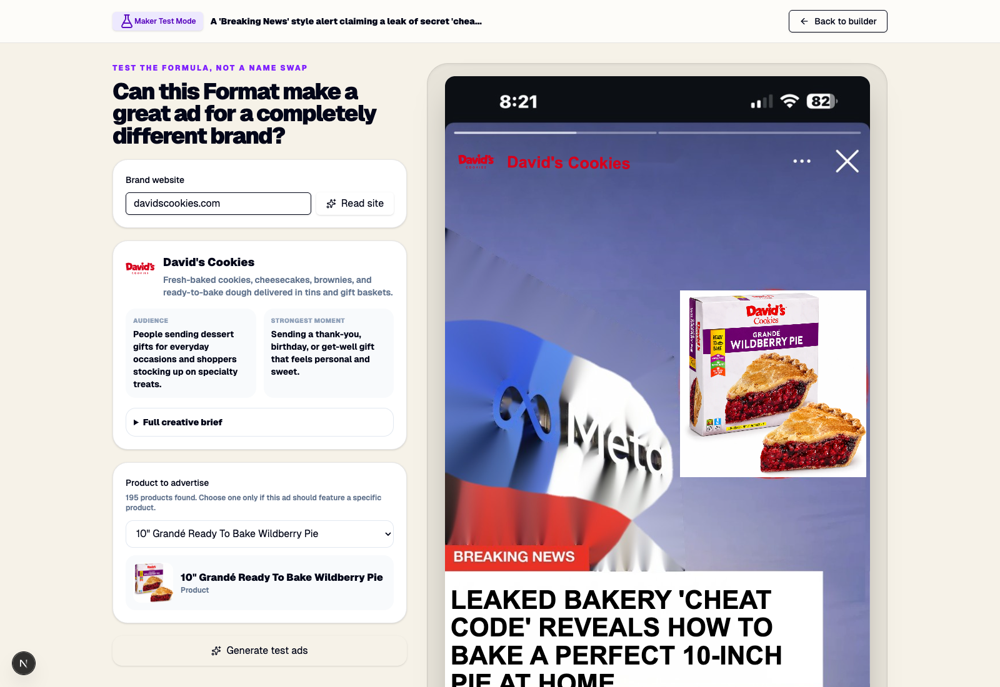
Bakery Secret
Product-specific and readable, but the visual setting still carries source-campaign residue.
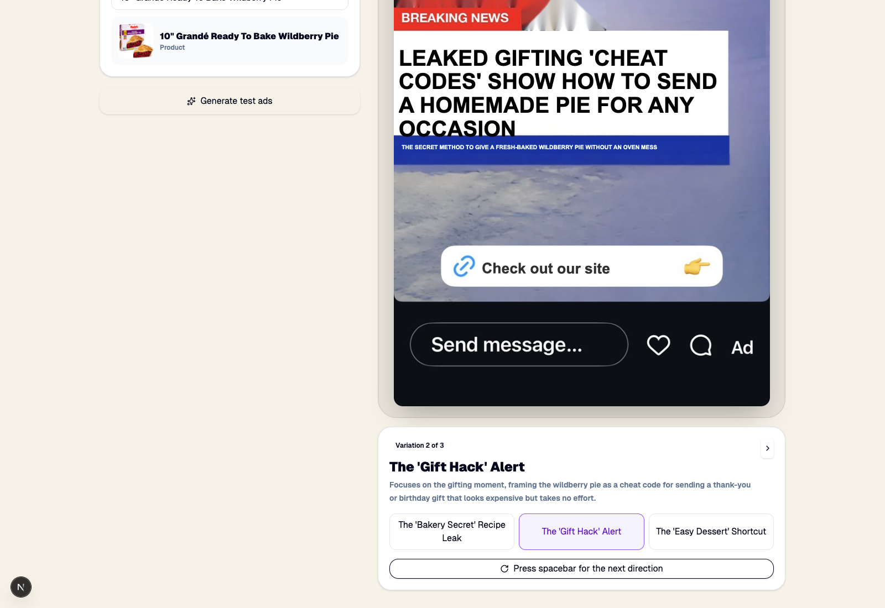
Chosen copy direction
The strongest concept of the three. It is not a winner yet because the image story is not clean enough to send.
Easy Dessert
A distinct gathering angle with coherent pie copy, but the same visual contamination remains.
Cost and stopping point
Provider
Vast.ai
Attempted final instance
#44946897 · 1× A100 PCIE, 80 GB
Listed rate
$0.950/hour
Run balance before
$1.18
Balance after destroy
$0.48
Exact balance change
$0.70
Approved run budget
$0.50; the run exceeded it by $0.20. That is an execution failure, not a successful product result.
OpenRouter key preflight
Active with $0.9768 of its $1 limit remaining. The recorded 429 was WandB’s temporary upstream limit, not Wiggly’s account limit.
Paid resources after stop
0 running instances. The new #44946897 was destroyed. The old #44894756 remains inactive at its displayed storage rate.
What the final run proved
The saved 55 GB RevealLayer workspace can transfer to a fresh machine and start behind a private SSH tunnel. It did not prove the product path because OpenRouter stopped first.